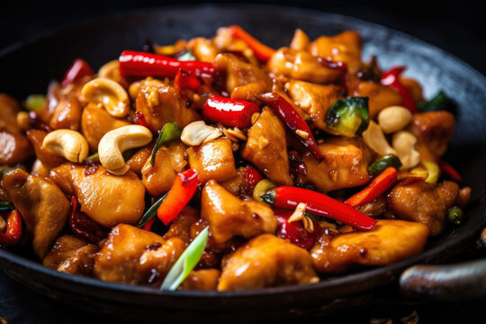

Kung Pao Chicken

Ingredients:
- 2 tablespoons white wine, divided
- 2 tablespoons soy sauce, divided
- 2 tablespoons sesame oil, divided
- 1 ½ teaspoons cornstarch
- 1 pound skinless, boneless chicken breast halves, cut into chunks
- 2 tablespoons hot chili paste or to taste
- 1 ½ tablespoons brown sugar
- 1 teaspoon distilled white vinegar
- 1 (8-ounce) can water chestnuts, drained
- 3/4 cup chopped peanuts
- 4 green onions, chopped
- 1 tablespoon chopped garlic
Quick Beef Stir-fry

Ingredients:
- 2 tablespoons vegetable oil
- 1 pound beef sirloin, cut into 2-inch strips
- 1 ½ cups fresh broccoli florets
- 1 red bell pepper, cut into matchsticks
- 2 carrots, thinly sliced
- 1 green onion, chopped
- 1 teaspoon minced garlic
- 2 tablespoons soy sauce
- 2 tablespoons sesame seeds, toasted